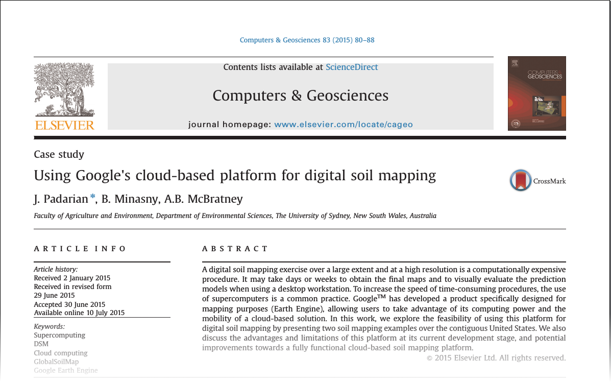
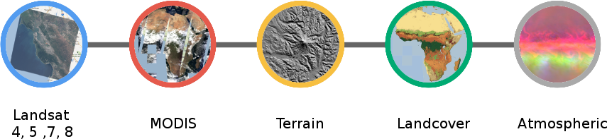
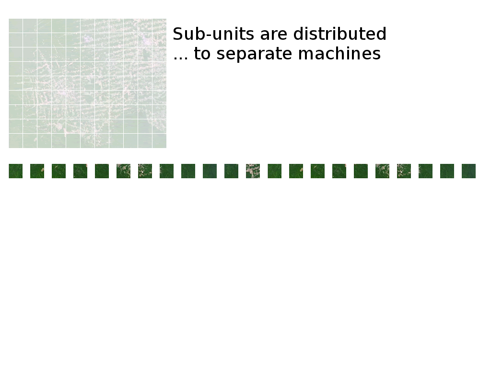
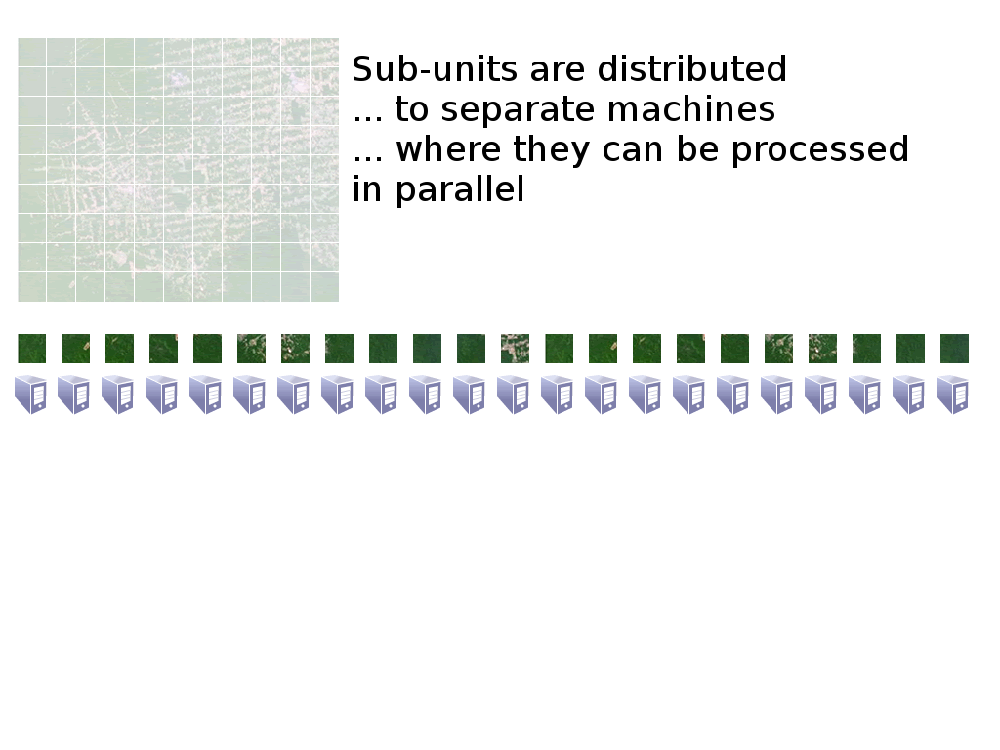
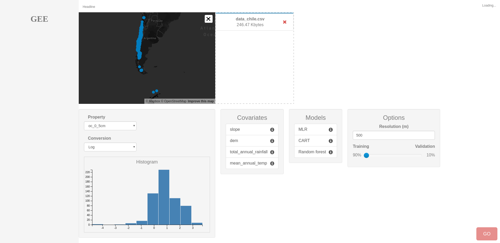
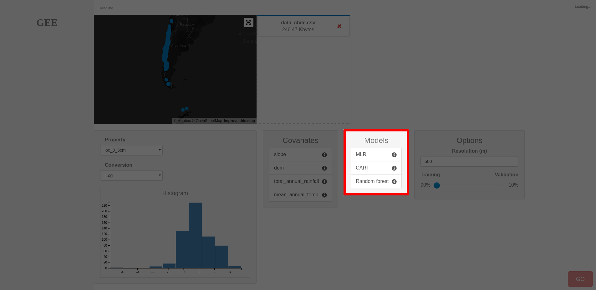

DSM online services
From the soil to the cloud
José Padarian, Alex McBratney, Budiman Minasny
University of Sydney
Background
Motivation
- DSM reaching a "young adult" state
- "Mature"
- "Dynamic"
- DSM implementation is not trivial
- Large extents and/or high resolution
- Make DSM more accessible
- Infrastructure
Not a new idea
INTAMAP (Pebesma et al. 2009)
Interpolation web service

SIS+ (Heuvelink et al. 2010)
Exploring the idea of generating maps "on-the-fly"
Other disciplines
- AquaMaps
- Lifemapper
- Biodiversity & Climate Change Virtual Laboratory
Back in 2013... Google Earth Engine

Back in 2015...

DSM workflow
In the cloud
Compile covariates
- DSM depends on environmental covariates (scorpan)
- Usually available as raster images
Challenges
- Many datasets
- Storage
- Manage resolution
- Extract data at specific location

Google Earth Engine example

> 200 public datasets
> 4000 new images every day
> 5 million images
> 5 petabytes of data
Source: GEE training materials
Model training
- Google EE has limited number of algorithms available
- Tree-like (CART, Random Forest)
- Perceptron
- Support Vector Machine
- Others
- We have been testing:
- R (Cubist, rpart, MLR)
- Python (scikit-learn NN)

Generate map
This is probably the most critical step (time)
- Infrastructure dependent
Tiling is very important (parallel!)
Tiling

Tiling

Tiling

Tiling

Tiling

Tiling

Tiling

Tiling

Uncertainty assessment
- Highly recommended (mandatory?)
- Time consuming (many iterations)
Methods
- Bootstrapping
- Fuzzy-k means with extragrades

Sharing
There are multiple alternatives:
- Raster file (potentially big files)
- Web map
- Just the model (on-the-fly)
Our platform
https://mapping.soil.properties





Demo
Final remarks
Considerably decreases iteration time in map production
- Who should us it?
- Individuals
- Institutions
- Consortia